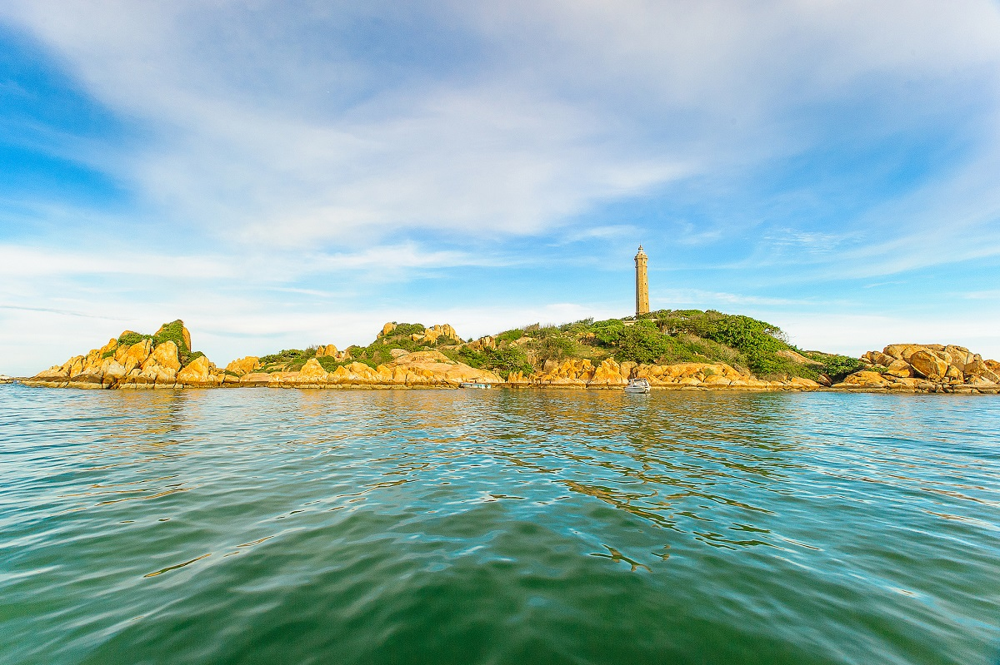
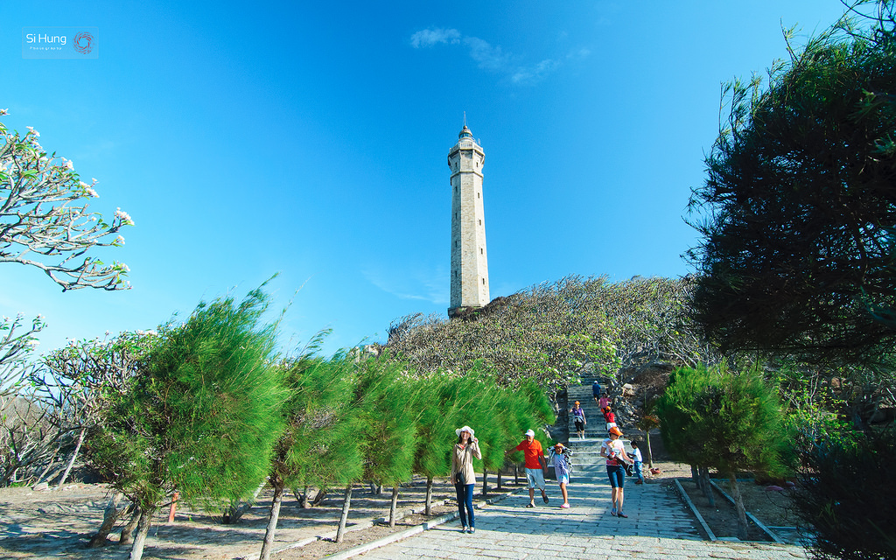

ĐC:Mũi Kê Gà, Xã Tân Thành, Huyện Hàm Thuận Nam, Tỉnh Bình Thuận. Cách thành phố Phan Thiết khoảng 30km về hướng nam, hải đăng Kê Gà nằm trên một mũi đất nhỏ sát biển của hòn Bà. Tên Kê Gà đã được người dân địa phương đặt cho ngọn hải đăng này vì nhìn từ xa mũi đất có hình dạng rất giống hình đầu một con gà. Để lên được tới ngọn hải đăng, bạn sẽ phải leo hết 183 bậc thang xoáy liên tục không có điểm ngừng nghỉ. Lên đến đỉnh đèn, bạn sẽ ngắm được biển xanh biếc nối tận chân trời, đón những luồng gió biển mát lạnh và thưởng lãm những dải đá đủ hình thù, kích cỡ nằm rải rác ven hòn.
Tùy vào thời điểm đến đây tham quan mà bạn có thể đi bộ ra hoặc phải đi thuyền thúng hoặc cano. Nếu đi bộ thì nên hỏi người dân về chế độ thủy triều.
Ở đây, thuyền phục vụ du lịch chủ yếu là thuyền đánh cá của người địa phương, chưa có các thiết bị đảm bảo an toàn (áo phao) nên bạn cần chuẩn bị trước.
Liên hệ thuê: Bạn đi tới ngã ba chợ (đường đi Kê Gà) vào đến bãi biển hỏi thăm giá cả thuyền thế nào. Giá thuê (tham khảo): 40.000đ/người